Counter-UAS & airspace security
Layered detection, sensor coverage and dead zones, fusion into one picture, and graduated responses chosen under clear authority.
detect · track · identify · decide · defeat · assess
I work on defence and security technology: counter-UAS and autonomy systems thinking, market intelligence, and the data engineering underneath. Open tools and short field notes, built from public sources, with the assumptions and limits stated.
Six areas I keep returning to. Each is a system problem more than a product problem: what the mechanism is, where it fails, and how you would know.
Layered detection, sensor coverage and dead zones, fusion into one picture, and graduated responses chosen under clear authority.
Inertial drift, visual odometry and place recognition, jamming versus spoofing, and the evidence needed to trust an autonomous estimate.
Link budgets, path loss and band trade-offs; what a control band reveals about range, data rate and how an emitter is found.
Threat models for aircraft, ground control, links and supply chain. Defensive and educational: each technique paired with its mitigation.
How capability is specified, tested, bought and sustained; why commercial product assumptions break, and what replaces them.
Open registers and signals fused carefully, with provenance recorded, lawful basis documented and erasure that survives re-ingest.
Public repositories. Tools run without setup where possible; guides state their sources, assumptions and limitations.
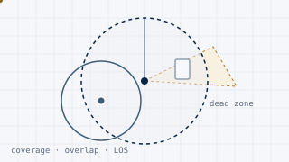
Place counter-drone sensors on a site and compute coverage, overlap and dead zones, with line-of-sight masking from buildings and terrain.
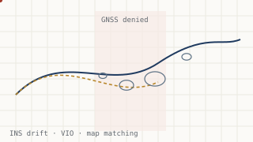
Inertial drift, visual-inertial odometry, place recognition and integrity checks: how a vehicle keeps a trustworthy estimate when satellites are denied or spoofed.
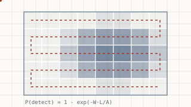
Classical search theory for ISR: probability maps, sweep width, detection probability and how to allocate limited sensor effort over an area.
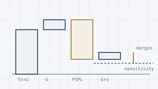
Transmit power, antenna gains, path loss and receiver sensitivity in one budget, so link margin and the effect of range or band choice are explicit.
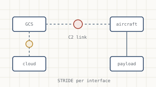
A structured threat model for an unmanned system: aircraft, ground control, data links, cloud and supply chain, with mitigations per interface.
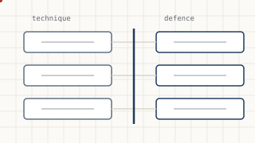
Scannable sheets pairing each offensive technique with the defence that stops it. Authorised testing and education only.
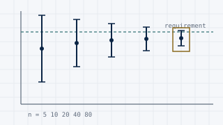
How many trials a claim actually needs: detection probabilities with confidence intervals, sample sizes and what a small field test can and cannot show.
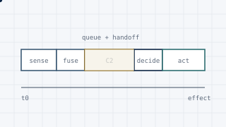
Decomposing the time from detection to effect into sensing, fusion, command-and-control queueing and decision, to see which stage really sets the pace.
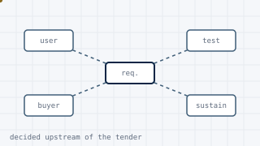
Why commercial product assumptions break in defence: the five-role buyer map, C2 and multi-domain literacy, interoperability, trust and assurance.
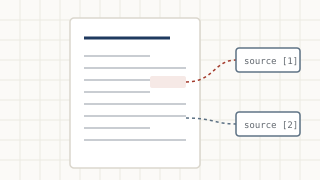
Short, cited case studies in counter-UAS, drone RF, GNSS jamming versus spoofing, and maritime OSINT.
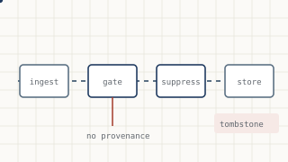
GDPR enforced in code: a worked legitimate interest assessment, provenance gate, hashed suppression and erasure that survives re-ingest.
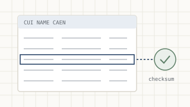
A field guide and dependency-free toolkit for national company registers: identifier validation, name matching, activity codes, EU VIES and EORI checks.
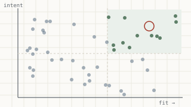
Market intelligence as a testable model: fit and intent on separate axes, data-quality heuristics, and a backtest that exposes survivorship bias. Synthetic data only.
Every tool and guide above, with source, tests, READMEs, stated limitations and licences. New work is added there first.
Short explainers, each built from open sources and ending in a one-line takeaway. Full text and sources in the case-studies repository.
Counter-drone response is a loop, not a gadget: detect, track, identify, decide, defeat, assess. A jammer is one option in one stage.
Buy the loop: detection and fusion first, decision and authority in the middle, effectors last.Source: JIATF-401 C-sUAS quick reference guide (public release)
433 MHz to 5.8 GHz sit at different points on one trade-off: lower bands reach further, higher bands carry more data and fade faster.
A drone's frequency tells you most of its range, its data rate, and how you would find it.Sources: JIATF-401 guide; free-space path loss
Jamming is denial and the receiver knows. Spoofing is deception and it usually does not. Anti-jam protection is not anti-spoof protection.
Jamming makes the drone lost; spoofing makes it lied to. Defend accordingly.Conceptual and defensive; public principles only
AIS shows the cooperative traffic. The analytical value is in the gaps and contradictions against imagery and radar layers.
On the sea, the signal is often the silence. AIS finds the honest traffic; fusion finds the rest.Sources: IMO, ITU-R M.1371; open maritime literature
How the work is done. The aim is an assessment someone else can check, challenge and reuse.
Primary and official documents before commentary. Every figure is traceable to where it came from.
Reliability of the source and credibility of the claim are judged separately. A single uncorroborated claim does not move the assessment.
What has to be true for the conclusion to hold is written down, so it can be tested or broken.
Each assessment carries a confidence level and what would change it: what is not known, and what was not tested.
I am Leonard Dumitru, based in Bucharest. I write about unmanned and counter-unmanned systems, the radio spectrum, and the intelligence and data work around them.
My interest is the space between a capability on paper and a capability that holds up in the field: where a sensor's datasheet range meets terrain, where a navigation estimate meets interference, where a requirement meets a procurement process, and where a data pipeline meets the law.
Everything published here is open-source synthesis from public material. Security content is defensive and educational. Where a number matters, the source is next to it; where I am unsure, I say so.
For questions about the work, corrections to a source, or a conversation.